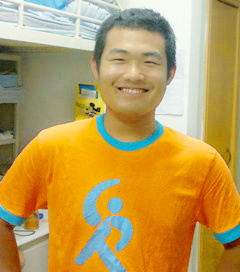
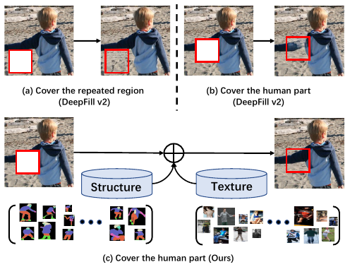
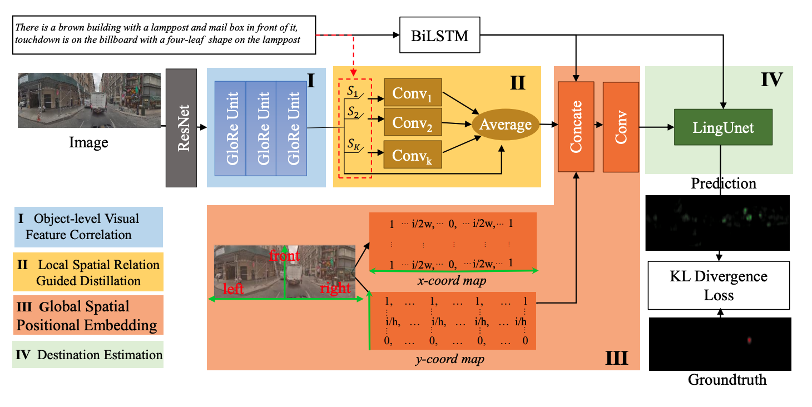

Yanyu Xu(徐衍钰)

Introduction
Scientist at IHPC, A*Star, Singapore.Email: xuyy2@shanghaitech.edu.cn and xu_yanyu@ihpc.a-star.edu.sg
Advised by Prof. Shenghua Gao
CV • Google Scholar • Github • Linkedin
Research Interests
Computer vision and deep learning, especially human-centric tasks in image or video, including visual attention prediction, pedestrian trajectory prediction, pose estimation and dancing to music.About Me
Now, I am a Scientist at the Institute of High Performance Computing (IHPC), A*Star, Singapore. I received my Ph.D. degree at ShanghaiTech University in 2020, supervised by Prof. Shenghua Gao. I am interested in computer vision and deep learning, especially human-centric tasks in image or video, including visual attention prediction, pedestrian trajectory prediction, pose estimation and dancing to music. Before coming to ShanghaiTech University, I received a BEng. Degree from Dalian University of Technology.I’m a visting student from Sep, 2019 in Learning and Vision Lab at National University of Singapore, working with Prof. Jiashi FENG.
News
[2021/07/23] 1 paper accepted by ICCV 2021 .[2021/07/09] 1 paper accepted by TPAMI .
[2021/07/01] 1 paper accepted by IROS 2021 .
[2021/06/12] 1 paper accepted by MICCAI 2021 .
[2021/03/02] 2 paper accepted by CVPR 2021 .
[2020/12/02] 1 paper accepted by AAAI 2021 .
[2020/11/22] 1 paper accepted by NuerIPS 2020 .
[2020/03/02] 1 paper accepted by CVPR 2020 .
[2019/03/02] 1 paper accepted by CVPR 2019 .
[2018/11/24] Invited talk at CS Department, Shanghai University: Beyond Universal Saliency Detection .
[2018/11/03] Nomination Award of the 2018 Microsoft Research Asia Fellowship
[2018/07/03] 1 paper accepted by ECCV 2018 .
[2018/06/27] 1 paper accepted by ACM MM 2018 .
[2018/06/24] 1 paper accepted by TPAMI .
[2018/02/12] 2 papers accepted by CVPR 2018 .
Conference Papers

Prior Based Human Completion
Zibo Zhao, Wen Liu, Yanyu Xu, Xianing Chen, Weixin Luo, Lei Jin, Bohui Zhu, Tong Liu, Binqiang Zhao, Shenghua Gao
Accepted by
CVPR 2021
Amodal Segmentation Based on Visible Region Segmentation and Shape Prior
Yuting Xiao,
Yanyu Xu,
Ziming Zhong, Weixin Luo, Jiawei Li, Shenghua Gao
Accepted by
AAAI 2021
[Paper]
[Code]

SIRI: Spatial Relation Induced Network For Spatial Description Resolution
Peiyao Wang*, Weixin Luo*, Yanyu Xu, Haojie Li, Shugong Xu, Jianyu Yang, Shenghua Gao
Accepted by
NeurIPS 2020
[Paper]
Saliency Detection in 360 Videos
Ziheng Zhang
*,
Yanyu Xu
*
, Shenghua Gao, and Jingyi Yu
Accepted by
ECCV 2018
Human Semantic Matting
Quan Chen, Tiezheng Ge,
Yanyu Xu
, Zhiqiang Zhang, Xinxin Yang, Kun Gai
Accepted by
ACM MM 2018
Encoding Crowd Interaction with Deep Neural
Network for Pedestrian Trajectory Prediction
Yanyu Xu
*
, Zhixin Piao
*, Shenghua Gao
Accepted by
CVPR 2018
Gaze Prediction in Dynamic 360 Immersive
Videos
Yanyu Xu
, Yanbing Dong, Junru Wu, Zhengzhong Sun, Zhiru Shi, Jingyi Yu, Shenghua
Gao
Accepted by
CVPR 2018

Beyond Universal Saliency: Personalized
Saliency Prediction with Multi-task CNN
Yanyu Xu
, Nianyi Li, Junru Wu, Jingyi Yu, Shenghua Gao
Accepted by
IJCAI 2017
(Best Student Paper Run-upper)
[Paper]
Bi-Level Multi-Column Convolutional Neural
Networks for Facial Landmark Point Detection
Yanyu Xu
, Shenghua Gao
Accepted by
ECCV 2016 Workshop
Journal Papers
Multi-column CNN and its Applications for
Crowd Counting and Face Alignment
Yanyu Xu
, Shenghua Gao, Yingying Zhang, Yi Ma
Submitted to
IJCV
(under review)
Personalized Saliency and its Prediction
Yanyu Xu
, Junru Wu, Nianyi Li, Shenghua Gao, Jingyi Yu
Accepted by
TPAMI
Multi-view Multi-task Gaze Prediction with Deep
Convolutional Neural Networks
Dongze Lian, Shenghua Gao, Lina Hu, Weixin Luo
Yanyu Xu
, Lixin Duan, Jingyi Yu
Accepted by
TNNLS 2018
Awards and Honors
The outstanding graduate 2020 in ShanghaiNomination Award of the 2018 Microsoft Research Asia Fellowship
National Scholarship for Doctoral Students 2018
Outstanding Student of ShanghaiTech University, 2018 - 2019
Best Student Paper Run-upper in IJCAI 2017
China National Post-Graduate Mathematical Contest in Modeling, Third Prize, 2017
Outstanding Student of ShanghaiTech University, 2016 - 2017
Outstanding Student of ShanghaiTech University, 2015 – 2016
Talks
Beyond Universal Saliency Detection . Invited talk at CS Department, Shanghai University, Nov. 2018.DancingPose: A Simple Model for for Predicting Dancing Pose Sequence from Music . Invited talk at Huawei-NUS Advanced Deep Learning Forum, Nov. 2019.
Professional Services
Conference reviewer: CVPR'2019, 2020, 2021, ICCV'2019, 2021, AAAI'2020, 2021, 2022, NeurIPS'2020, 2021, ICLR 2021, WACV 2021, 2022.Journal reviewer: IEEE TIP, TCSVT, NeuroComputing, Computers & Graphics, Journal of Artificial Intelligence Research (JAIR).